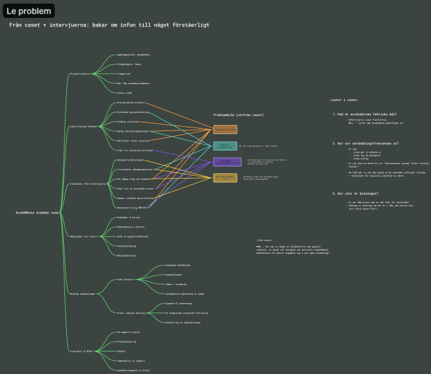
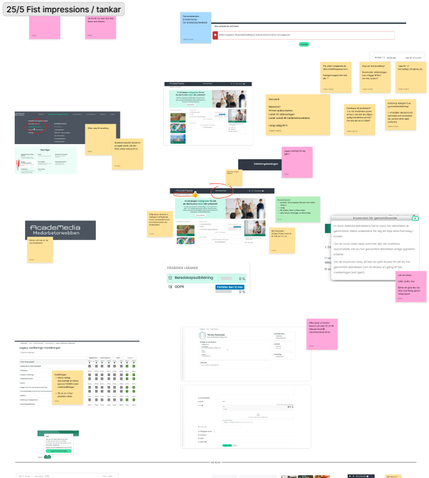
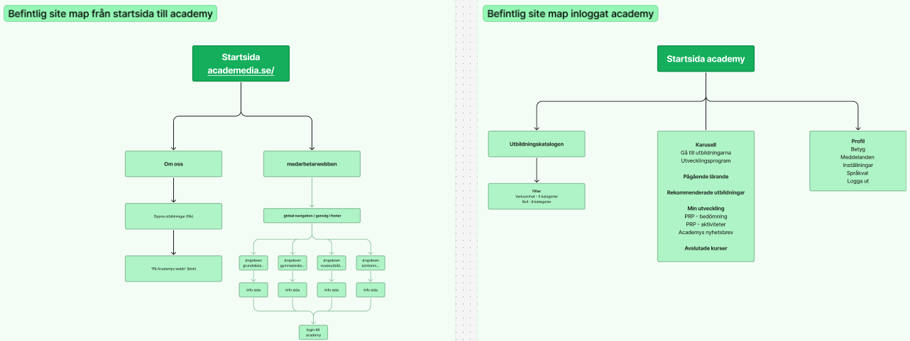
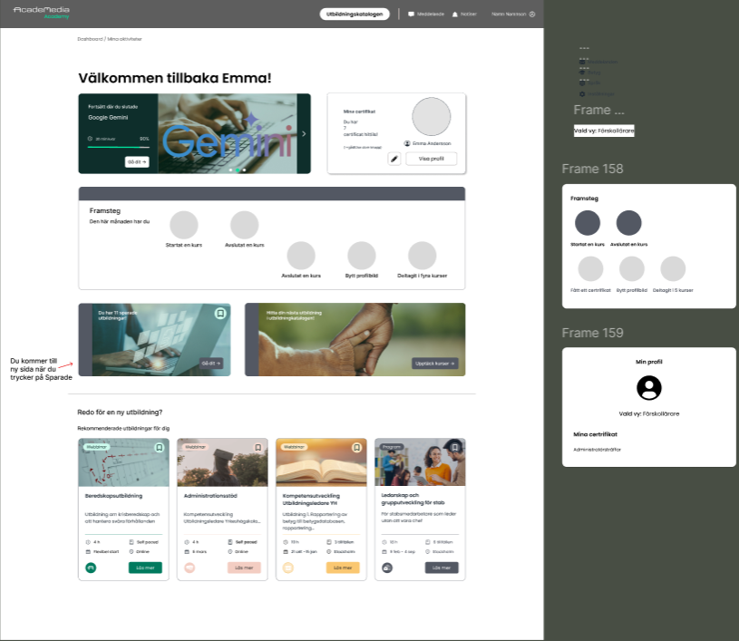
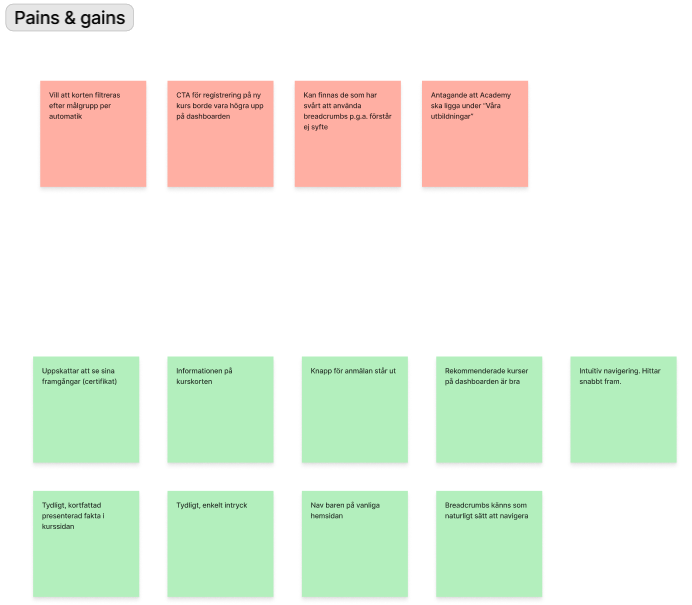
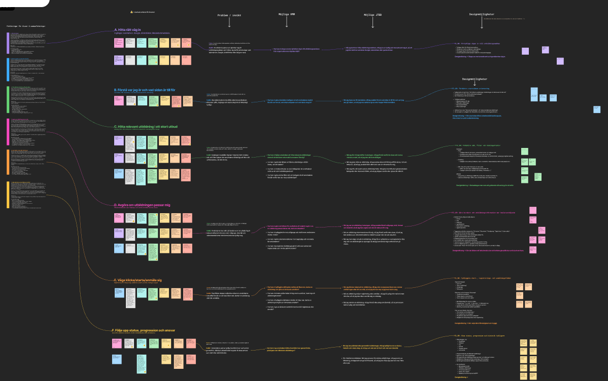
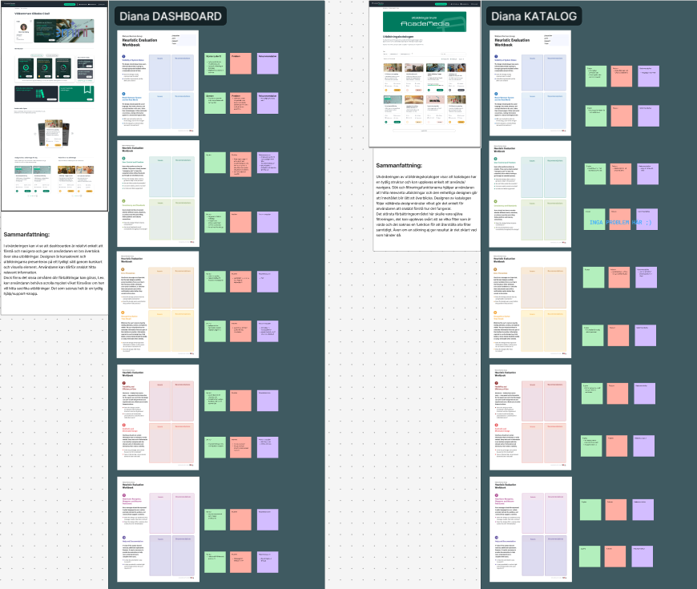

A confidential UX design project in collaboration with AcadeMedia, focused on understanding user needs, improving digital workflows and creating structured design solutions within a real business context.

This project was completed in collaboration with AcadeMedia and involved working with a real business challenge under strict confidentiality. Because of this, specific details, internal material and final solutions cannot be publicly shared.

The work focused on understanding user needs, mapping workflows and identifying opportunities for clearer digital experiences. I used structured research, analysis and design thinking methods to support informed design decisions.

Based on research and analysis, I worked with flows, interface structure and prototype concepts. The focus was on creating clarity, improving usability and supporting users in completing tasks more efficiently.

The final outcome cannot be shown publicly due to confidentiality. However, the project strengthened my experience working with real stakeholders, protected material and UX solutions connected to actual organizational needs.
Behind the Design
Since the project is protected by strict confidentiality, the public case study focuses on my process, responsibilities and learnings rather than exposing internal material or final business-sensitive solutions.

Anonymised user testing material was used to understand user needs, workflow friction and opportunities for improvement.

Findings were organised into themes to identify recurring needs, pain points and possible design directions.

A heuristic evaluation helped identify usability issues and areas where structure, clarity and interaction patterns could be improved.
Creating prototype concepts in Figma while respecting confidentiality and protected project boundaries.
This project taught me how to communicate process and design thinking without exposing sensitive business information.
Working with a real company strengthened my understanding of how UX decisions connect to organizational needs and constraints.
Research, workflow mapping and clear documentation became essential for creating reliable design recommendations.
Reflection
Working on a confidential project strengthened my ability to navigate complex design challenges while respecting professional responsibilities and confidentiality throughout the process.
Collaborating closely with stakeholders also reinforced the importance of structured communication, continuous iteration and designing solutions that balance user needs with organisational goals.